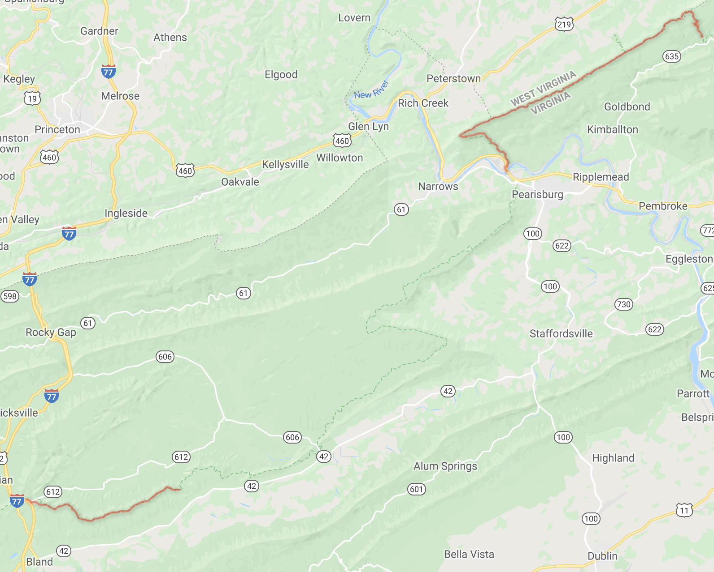

Founded in 1970, the Outdoor Club at Virginia Tech is a self propelled wildland activities organization which seeks to foster a holistic understanding of our environment through meaningful contact with the surrounding land. The club plays a unique dual role, both recreationist and conservationist. Deemed a class A member of the Appalachian Trail Conservancy, the club is responsible for maintaining approximately 30 miles of the Appalachian Trail which is divided into two sections - Pine Swamp Branch Shelter to U.S. 460 at the New River (gpx) and VA 611 to I-77 (gpx) *see map below*. The club is neighbored by the Piedmont Appalachian Trail Hikers (PATH) and the Roanoke Appalachian Trail Club.
Trail maintenance and construction includes a wide variety of activities. Some of the club's everyday activities consist of: cutting out blowdown with chainsaws and crosscut saws, painting white and blue blazes, maintaining treadway, maintaining open areas, and picking up trash. Some of the club's more specialized activities consist of: the construction and maintenance of moldering privies, shelters, and trail signs as well as installing water bars, check damns, and rock steps. Everyday activities are usually carried out on day trips throughout the semester and the summer.
Trail work is fun, hard work and something that anyone can learn and do. Don't be intimidated! If you're interested in trail work please contact us.